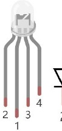

ESP32-S3 board
The brain that runs your uploaded sketch.
ESP32-S3 Lab · Day 9 of 30
Today the board becomes a painter. You wire one small dome that holds three lights — red, green, and blue — to three PWM pins, then set a brightness on each. Your eye adds the three glows into a single colour, which is how every screen you own builds its picture from just three numbers.
TSK-DAY09-RGB
Hand this to an agent so it can pull the lesson packet and coach you step by step.
01 First, know the pieces
Six things, most of them small. Tap Define on any part you haven't met — the answer opens as a field note you can read and dismiss without losing your place.
The brain that runs your uploaded sketch.

Spreads the pins into rows you can reach and label.

Three lights — red, green, blue — in one dome with a shared pin.

One in series with each colour leg to keep the current gentle.

Temporary, solder-free connections.

Uploads the sketch to the board.
02 Make the physical circuit
The official Freenove diagram is your chart — schematic on top, the same circuit built on a breadboard below. Click it to enlarge. Each connection tells you where the wire goes and why.
The common pin goes to 3.3V. This is a common-anode LED, so the long common pin goes to 3.3V and not to ground — the opposite of a single LED. Each colour leg reaches its own GPIO through a 220 Ω resistor. Unplug USB before you move any wire.
03 One action at a time
This is the main path — you can finish the day without opening a single field note. Tap each step as you go to keep your place.
Seat the ESP32-S3 on the GPIO extension board and keep USB unplugged while you wire.
Find the RGB LED's long pin — that's the common one shared by all three colours.
Wire the red leg through a 220 Ω resistor to GPIO 38.
Wire the green leg through a 220 Ω resistor to GPIO 39.
Wire the blue leg through a 220 Ω resistor to GPIO 40.
Run the long common pin to 3.3V, not to ground.
Compare every wire to the chart before you plug in USB.
Open Sketch_05.1_RandomColorLight.ino in Arduino IDE and upload it.
Watch the dome change colour again and again.
04 Read just enough code
The sketch sets up three PWM channels, then paints a colour by giving each one a brightness. Switch to MicroPython if you'd rather see the same idea in Python — the wiring never changes.
const byte ledPins[] = {38, 39, 40}; // R, G, B
const byte chns[] = {0, 1, 2};
void setup() {
for (int i = 0; i < 3; i++) {
ledcAttachChannel(ledPins[i], 1000, 8, chns[i]);
}
}
void loop() {
int red = random(0, 256);
int green = random(0, 256);
int blue = random(0, 256);
ledcWrite(ledPins[0], 255 - red); // common anode: LOW = brighter
ledcWrite(ledPins[1], 255 - green);
ledcWrite(ledPins[2], 255 - blue);
delay(200);
}const byte ledPins[] = {38, 39, 40}The three pins are the red, green, and blue legs in that order. ledcWrite(ledPins[0], 255 - red)Writes 255 minus the value because this common-anode LED lights when its pin goes LOW. red = random(0, 256)Each colour gets a fresh brightness from 0 to 255, and setting all three at once mixes the shade. Optional side path · same circuit
pins = [38, 39, 40] # R, G, B
pwm0 = PWM(Pin(pins[0]), freq=1000)
r = random.randint(0, 1023)
pwm0.duty(1023 - r) # common anode: invert with 1023 - valuepwm0.duty(1023 - r)MicroPython's duty here is 10-bit, so it inverts with 1023 minus the value instead of 255.Same pins, same wiring. Run it in Thonny if MicroPython is set up; otherwise skip it — it should never block the Arduino-first path.
05 Understand, don't memorise
Day 7 turned one pin into a dimmer with PWM. Today you run that same dimmer on three pins — one for red, one for green, one for blue — and the colours add up in your eye. That single idea is the whole of colour on every screen you own, built from three numbers.
Each colour leg gets its own PWM channel — the Day 7 dimmer, running three times over instead of once.
Each channel is set to 8-bit, so a colour has 256 brightness steps from 0 to 255; three of them together reach millions of shades.
The red, green, and blue glows overlap under one lens and arrive at your eye as a single blended colour.
With no colour winning — red, green, and blue at the same level — the mix stays neutral, dim grey low down and white at full.
The one shared pin sets the polarity, deciding whether a colour lights when its pin goes LOW or when it goes HIGH.
colour = red + green + blue, each a PWM level from 0 to 255
Three LEDs share one pin. Run that shared pin to 3.3V and you have a common anode, where each colour lights when its own pin goes LOW. Run it to ground and you have a common cathode, lit on HIGH. This kit is a common anode, so the sketch writes 255 minus your value and a bigger number still means brighter.
The channels are 8-bit, which gives 256 levels per colour, 0 through 255. That is the same ledc hardware from Day 7 doing the fast switching, while your loop just names one level for each of the three colours.
When red, green, and blue are equal, none of them leads, so your eye finds no hue to settle on and reads neutral — grey at a low level, white at a high one.
06 Know it worked
Nothing prints to the screen today — the proof is the colour in the dome.
The colours look random on purpose — each one is a fresh mix of red, green, and blue.
07 Make the idea yours
The random sketch proves the board can mix. This proves you know the recipe. You'll predict three colours from their red, green, and blue numbers, then set those numbers by hand and check your eye against your maths. It fits inside today's 25 minutes.
On paper, write the three numbers from 0 to 255 for orange, then purple, then white. Orange is a lot of red with some green and no blue; purple is red and blue together with green held low; white is all three at full. Notice that equal numbers should read as neutral grey or white.
In the sketch, swap each random(0, 256) for your fixed red, green, and blue number, upload, and compare the dome with your prediction. The code still writes 255 minus each value for the common anode, so your bigger number is still the brighter one. If a colour looks off, nudge the number and re-upload.
08 Learn it with a hand on the tiller
Every lesson ships with a code and a machine-readable packet, so an agent can guide you with full context.
TSK-DAY09-RGB
How the agent should behave: guide one physical connection at a time and wait for confirmation, teach that any colour is three PWM brightnesses from 0 to 255, explain the common-anode inversion on request, and help the learner predict then mix a named colour. Always check the common pin, wiring, board, and USB before changing code.